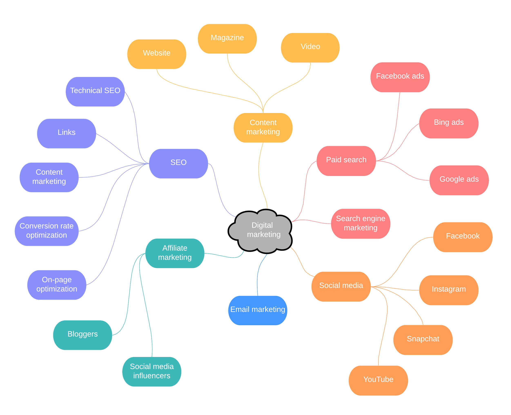

>
EDUCATIONBOT
Quick Revision Time
Show me a Mind Map
Test Your Knowledge
Bot
Mind Map
Generate a Mind Map to get a visual representation of the text
Tamil Nadu is a state located in the southern part of India and has a rich and diverse history that dates back to ancient times.Prehistoric Period:The earliest traces of human habitation in Tamil Nadu date back to the Paleolithic era, around 300,000 years ago. Excavations in the region have uncovered stone tools, weapons, and pottery from this period.Indus Valley Civilization:The Indus Valley Civilization (3300 BCE to 1300 BCE) is believed to have extended into the southern part of India. Archaeological evidence from Tamil Nadu shows that the civilization had a presence in the region, with artifacts such as seals and pottery being found at sites like Adichanallur and Kaveripakkam.Sangam Period:The Sangam period (3rd century BCE to 3rd century CE) marked a significant period of Tamil history, which saw the development of Tamil literature and the emergence of three Tamil dynasties - the Cheras, the Cholas, and the Pandyas. The period is named after the famous Sangam literature, which was composed during this time. The literature includes poems and epics that provide valuable insights into the social, political, and economic life of the Tamil people during that period.The Chera Dynasty:The Chera dynasty, which had its capital in modern-day Kerala, controlled a significant part of Tamil Nadu during the Sangam period. The Cheras were known for their extensive trade relations with the Roman Empire and other parts of the world. They also had a strong navy, which helped them maintain their dominance in the region.The Chola Dynasty:The Chola dynasty, which emerged in the 9th century CE, was one of the most powerful dynasties in South India. The Cholas were known for their military might, cultural achievements, and maritime prowess. The dynasty reached its zenith during the reign of Rajendra Chola I, who expanded the Chola Empire to include parts of Southeast Asia.The Pandyas:The Pandyas, who ruled over the southern part of Tamil Nadu, were known for their patronage of art, literature, and architecture. They were also great traders and maintained close ties with the Roman Empire and other parts of the world.Medieval Period:During the medieval period, Tamil Nadu was ruled by various dynasties such as the Pallavas, the Cholas, and the Vijayanagara Empire. The Pallavas, who ruled from the 3rd century CE to the 9th century CE, were known for their patronage of art and architecture, particularly the development of the Dravidian style of architecture.The Vijayanagara Empire, which emerged in the 14th century CE, was one of the most powerful empires in South India. The empire was known for its architectural and artistic achievements, as well as its patronage of literature and music.Colonial Period:In the 16th century, Tamil Nadu came under the rule of the Madurai Nayak dynasty. Later, the British established their presence in the region through the East India Company. Tamil Nadu played a prominent role in India's struggle for independence, and many of the leaders of the Indian National Congress hailed from Tamil Nadu, including C. Rajagopalachari, S. Satyamurti, and K. Kamaraj.Modern Period:Tamil Nadu was formed as a state in India in 1956, and since then, it has become one of the most prosperous and progressive states in the country. It is known for its rich culture, art, music, and literature, and has made significant contributions to the fields of science, technology, and education. The state has also been at the forefront of social and political movements, including the Dravid.
Generate a Mind Map
